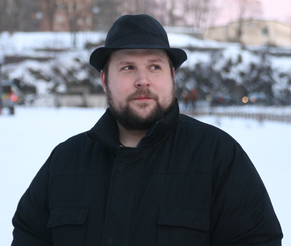
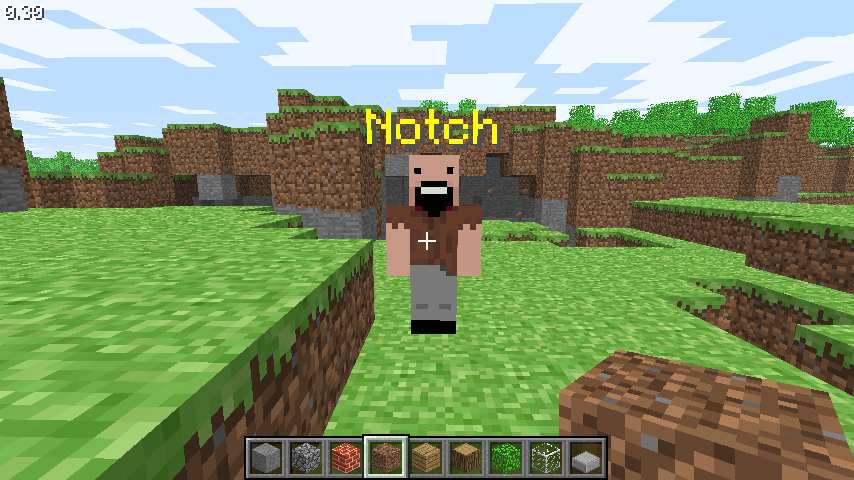

From a self-taught Swedish programmer working nights on a side project to the creator of the best-selling video game in history.


notch.jpg and minecraft.jpgMarkus Alexej Persson was born on 1 June 1979 in Stockholm. The world would later know him simply as Notch.
He spent his early years in the small town of Edsbyn, surrounded by dense forests and long winters. Those quiet landscapes — the feeling of endless exploration — would later shape the soul of Minecraft. As a child he was obsessed with Lego. Then, at age seven, his father brought home a Commodore 128 computer. Everything changed.
By eight years old he was already writing programs. He created a text adventure game. He reverse-engineered Doom — an achievement he still ranks second only to inventing Minecraft. He never finished high school. He didn’t need to. Code was already speaking louder than any classroom.
The snowy woods of his childhood became the blueprint for open-world freedom.
Hours spent building taught him the joy of creation without instructions.
The machine that turned a curious kid into a lifelong programmer.
In early 2009, while working a regular programming job, Markus started a personal side project. He expected it to last six to twelve months and maybe fund the next game.
Inspired by Infiniminer, Dwarf Fortress, and the pure sandbox joy of building, he wanted something simple: a world made of blocks where players could dig, place, survive, and create without being told what to do. The graphics were deliberately crude — not because he couldn’t do better, but because he wanted to ship fast and iterate.
He posted the first version on the indie forum TIGSource in May 2009. No marketing. No publisher. No big studio. Just a download link and a quiet hope.
“I just wanted to make a game that could make enough money to make another game.”
— Markus “Notch” PerssonPlayers didn’t just download Minecraft — they lived in it. They built castles, survived the night, shared secrets on forums, and created their own rules. Because there were almost no instructions, the community became the teacher.
Sales started slow: 40 copies in the first weekend. Then the numbers began climbing. Within months Markus could reduce his day-job hours. On his birthday in June 2010 he quit entirely to work on Minecraft full-time. By the time the official 1.0 version launched in November 2011, the game had already sold over four million copies.
To support the growing phenomenon, Markus founded Mojang (Swedish for “thingamajig” or “gadget”). The studio stayed surprisingly small for years — often under 40 people — while generating tens and then hundreds of millions in revenue. He brought in talented collaborators, most notably Jens Bergensten, who eventually took over as lead designer so Markus could step back from the daily pressure of being the sole creative force.
Minecraft expanded to mobile, Xbox, and beyond. Merchandising deals appeared. Teachers started using it in classrooms. LEGO partnered with it. A generation of kids learned creativity, logic, and collaboration inside a blocky world that one man had built in his spare time.
In September 2014, Markus publicly asked if anyone wanted to buy his share of Mojang so he could “move on with his life.”
Microsoft answered. Three months later the deal was done: $2.5 billion in cash for Mojang and Minecraft. Markus held the majority stake. Overnight he became one of the wealthiest game developers in history. And just as suddenly, he walked away.
“It’s not about the money. It’s about my sanity. I’ve become a symbol. I don’t want to be a symbol.”
— Notch, explaining why he soldHe had built something so massive that it no longer felt like his. The pressure, the expectations, the constant attention — it had stopped being fun. Selling was not a cash grab. It was an escape.
The billions did not bring peace. In the years after the sale, Markus spoke openly about depression, isolation, and the strange loneliness that comes with extreme success. He bought a sprawling Beverly Hills mansion. He tried to enjoy the freedom. But the creative spark that once drove him felt harder to reach. Being “the Minecraft guy” followed him everywhere.
Later public statements and social media posts became increasingly controversial, leading Microsoft and Mojang to formally distance themselves from him. His name was gradually removed from official materials. The man who gave the world Minecraft eventually became separated from the very thing he created.
His story is not a simple fairy tale. It is a reminder that extraordinary success can carry extraordinary personal cost — and that walking away is sometimes the bravest decision of all.